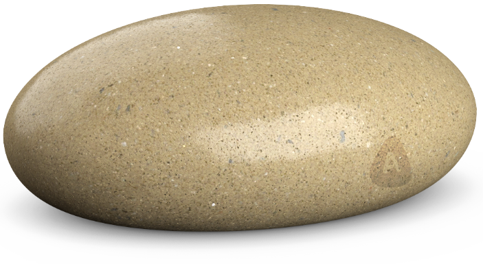

We all want more focus and zen in our lives, but with the stress from the daily hustle and bustle, that ain’t easy. But with A Stone Sculpture, you may enjoy the soothing relaxing effects from the stones right out of the box.
Feeling lonely? Are all your “friends” ignoring you, and too busy to care? Worry no more - with A Stone Buddy, you’ll never have to feel lonely again! It might be a bit cold at first, but let it into your life, and it will warm up right away.
Virtually everybody has books, some of them for reading, but most of them for show. Do you you want to impress your friends? Rock their world with your heavy sense for decor. Made out high-quality Danish stone, this is bound to impress.
Introducing A Stone Doorstop. Made out of Danish high-quality stone. With A Stone Doorstop, you’ll never have to worry about stopping doors again! Simply place A Stone Doorstep between the door and the doorframe, and it wont shut!
Tired after a hard day’s work at your mundane desk job, which you at best only care half-assed about? Wish that you could kick your feet up, but with that “hiking feel”? Luckily your wishes has been granted. With A Stone footrest you can finally kick back and relax naturally, in the comfort of your own home.
Even in our modern digital times, we still need to interact with paper. Bills, angry-complaints from neighbours, fines and job-rejection letters. Fear not, A stone Paperweight, made out of high-quality Danish stone can keep it all on your desk.